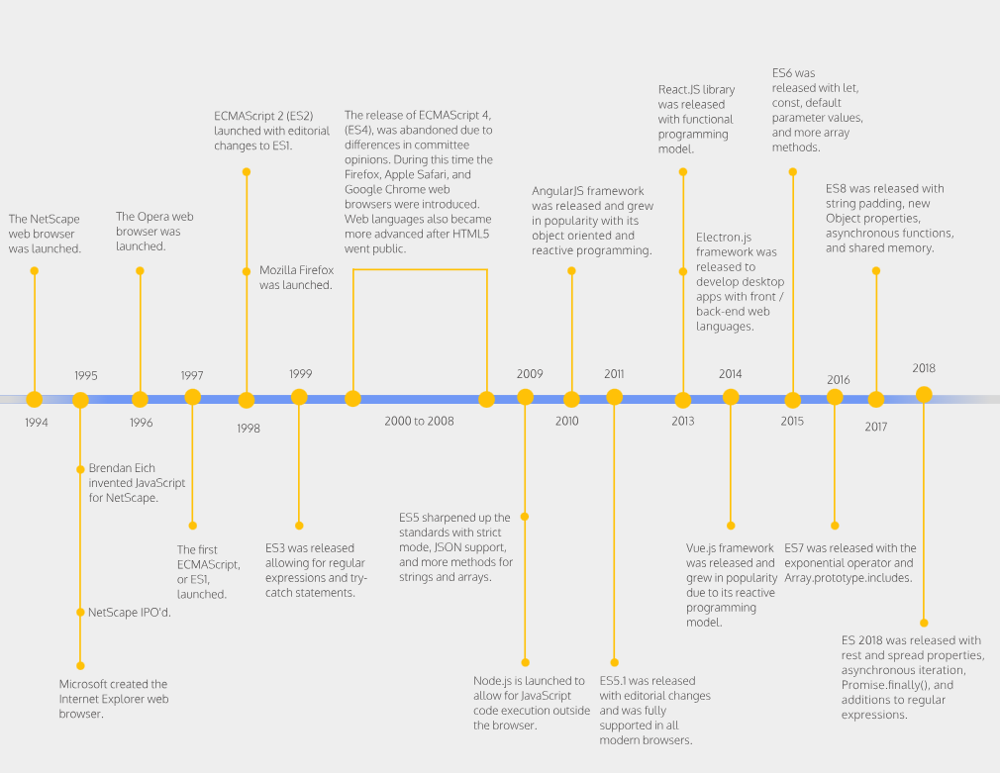

Javascript haqida
💡 Javascript - web uchun maxsus yuqori darajadagi (high-level)
dasturlash tili.
Uning yordamida HTML va CSS ni dinamik darsda o'zgartirish imkonyati
mavjud.
Avtomobilga o'hshatish

💡 Web assoslarini kundalik ishlatadigon tilimizda o'xshatadigon
bo'lsak, HTML - ot (noun), CSS - sifat (abjective),
Javascript esa f'el (verb) v'azofasini bajaradi.
Amalyota qo'lanilishi
-
Frontend development - Javascript yordamida veb sahifaga dinamik
ko'rinishda qo'shimchalar qo'shish, masalan matn va kontentni
o'zgartirish, rasmlarni
o'lchovini o'zgartirish va h.k. Undan tashqari JS freymvorklar yordamida
veb sayt ishlab chiqish jarayonini ancha tez va oson amalga oshirish
imkoniyati mavjud
-
Backend development - JS'ga asoslangan NodeJS texnologiyasi
orqali backend ya'ni server-side dasturlashni amalga oshirish imkoniyati
mavjud
-
Mobile application development - ReactNative va shunga o'xshash
texnologiyalar orqali Hybrid ko'rinishda mobil ilovalar yaratish
imkoniyati mavjud
-
Game development - Online o'yinlar yaratishda Javascript ham faol
tarzda ishlatilinadi

Developer console
💡 Javascript kodini tezda ishga tushirish uchun foydalaniladi
💡 Google Chrome ga kirib (посмотрить код) qilib
(console) qismiga o'tib alert('Salom dunyo');
deb yozsak ekranimizga chiqadi